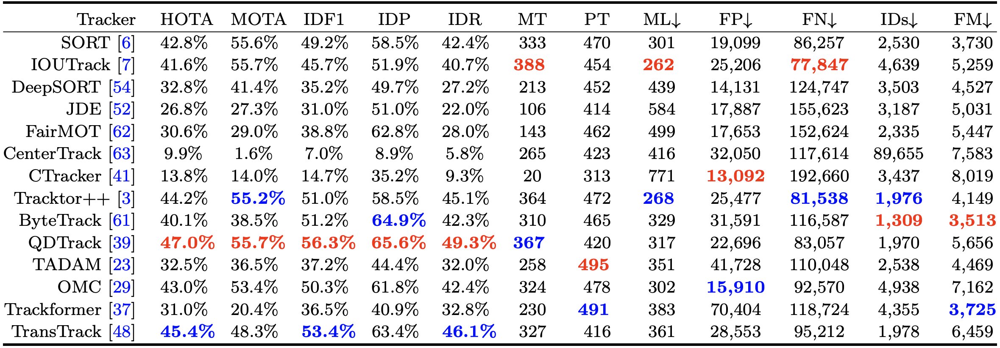
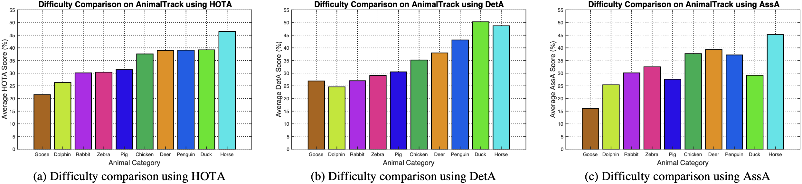
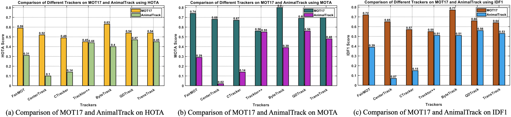
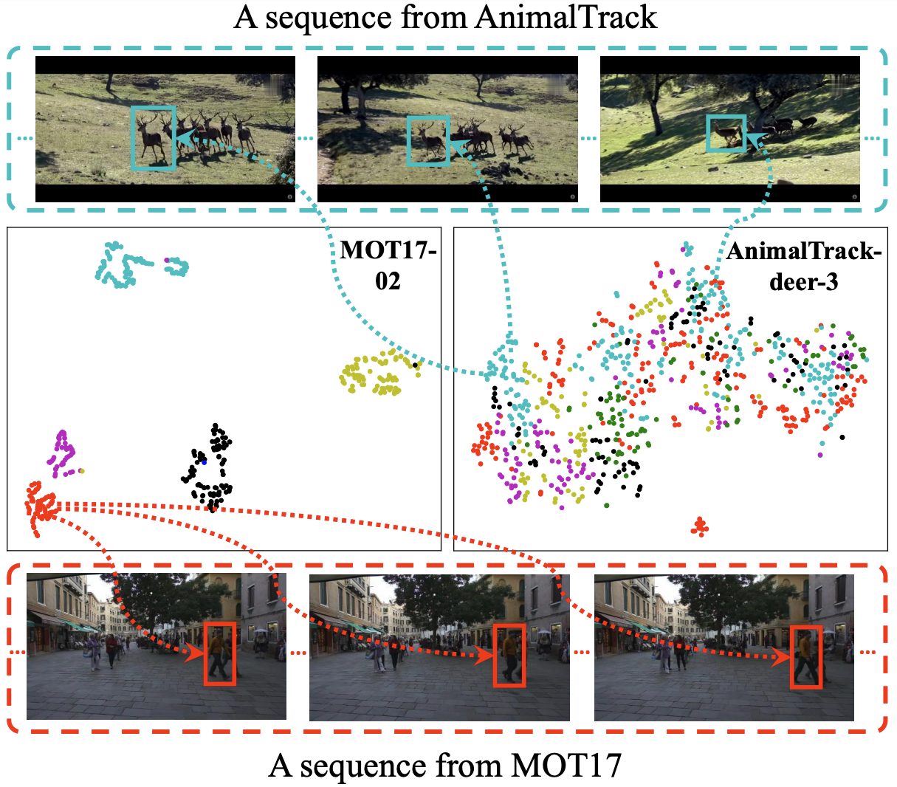

AnimalTrack: A Benchmark for Multi-Animal Tracking in the Wild
Evaluation Metrics
In AnimalTrack, we employ commonly used CLEAR metrics (MOTA, MT, ML, FP, FN, IDs and FM), ID metrics (IDP, IDR and IDF1), and HOTA metrics (HOTA, AssA, and DetA) for evaluation.
Evaluated Trackers
We extensively evaluate 14 state-of-the-art MOT algorithms on the proposed AnimalTrack. Table 1 shows these trackers.
Table 1. Description of each algorithm.
| Tracker | Paper | Where | Year | Code |
|---|---|---|---|---|
| SORT | Simple Online and Realtime Tracking | ICIP | 2016 | Code |
| IOUTrack | High-Speed Tracking-by-Detection without Using Image Information | AVSS | 2017 | Code |
| DeepSORT | Simple Online and Realtime Tracking with a Deep Association Metric | ICIP | 2017 | Code |
| JDE | Towards Real-Time Multi-Object Tracking | ECCV | 2020 | Code |
| FairMOT | FairMOT: On the Fairness of Detection and Re-Identification in Multiple Object Tracking | IJCV | 2021 | Code |
| CenterTrack | Tracking Objects as Points | ECCV | 2020 | Code |
| CTracker | Chained-Tracker: Chaining Paired Attentive Regression Results for End-to-End Joint Multiple-Object Detection and Tracking | ECCV | 2020 | Code |
| Tracktor++ | Tracking without bells and whistles | ICCV | 2019 | Code |
| ByteTrack | ByteTrack: Multi-Object Tracking by Associating Every Detection Box | ECCV | 2022 | Code |
| QDTrack | Quasi-Dense Similarity Learning for Multiple Object Tracking | CVPR | 2021 | Code |
| TADAM | Online Multiple Object Tracking with Cross-Task Synergy | CVPR | 2021 | Code |
| CSTrack | One More Check: Making "Fake Background" Be Tracked Again | AAAI | 2022 | Code |
| TransTrack | TransTrack: Multiple-Object Tracking with Transformer | arXiv | 2020 | Code |
| Trackformer | TrackFormer: Multi-Object Tracking with Transformers | CVPR | 2022 | Code |
Evaluation Results
All the results can be downloaded here. Below are some evaluation results and comparison.
Table 2. Overall evaluation results and comparison of different tracking algorithms on AnimalTrack. The best two results on each metric is highlighted in red and blue fonts.

Figure 1. Difficulty comparison of different categories in AnimalTrack using HOTA (image (a)), DetA (image (b)) and AssA (image (c)). The larger the score is, the less difficult the category is.

Figure 2. Comparison of different trackers on pedestrian tracking benchmark MOT17 and the proposed AnimalTrack in terms of HOTA (image (a)), MOTA (image(b)) and IDF1 (image(c)).
